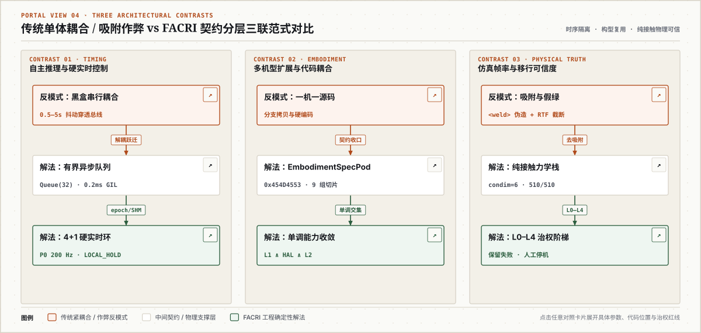

PILLAR 01
第一支柱：分层多智能体与受约束离线演化
系统层集成动态规划、任务图运行、结果核验与离线反思演化，结合记忆与设施状态生成带互斥窗口的任务图；规则演进严格限定在离线沙箱内。
src/robot_app/configs/robots/configs/scenes/manifests/factory.jsondocs/development/factory-runtime-baseline.md
| 核心维度 | 传统限制与 FACRI 工程解法 |
|---|---|
| 大模型自主性与物理实时控制 | 大模型推理存在百毫秒至秒级抖动，直连电机总线易引发碰撞或跌倒；固定脚本又无法应对工位异常。FACRI
将系统编排与端侧 |
| 多机型扩展与代码库耦合 | 传统控制节点常硬编码关节索引与末端类型，新增机型须复制分支。FACRI 以声明式具身规格为唯一数据源，按静态构型、驱动实测与场景策略三层单调收敛能力，由定长零拷贝共享内存协议统一接入跨形态机型。 |
| 仿真效率与真实移行可信度 | 动画或吸附仿真会掩盖滑移与时序错位，固定实时率停机又会截断长尾故障证据。FACRI 采用纯刚体接触仿真（510/510 全流程通过记录），隔离仿真时钟与宿主挂钟，废除 RTF 0.5 自动停机并将停止主权交给操作员，以 L0 至 L4 证据防止跨代冒用。 |
系统层集成动态规划、任务图运行、结果核验与离线反思演化，结合记忆与设施状态生成带互斥窗口的任务图；规则演进严格限定在离线沙箱内。
单台能力由静态本体、硬件实测与场景策略三层交集单调收敛生成，下游只可收窄；4 台人形与 9 台异构装备均按同一契约分派任务。
端侧采用 1 个守护进程加 4 个 C++20
工作进程，隔离伺服保护、定位、规划与日志缓冲；启动期探测硬件拓扑，为控制进程独占物理大核。
本体侧通过统一插件加载仿真或五类真机驱动，以零拷贝内存与带外脉搏隔离后端；工装与地勤设施接入独立网关 FacilityHAL。
端侧算法涵盖混合导航、局部避障、腰部补偿激光定位、17 轴逆解与柔顺力控，经由单机能力模块总览统一暴露。
平台建立五级证据阶梯，以冻结清单锁定调度间隔、物理步长与单机隔离边界，全部实验保留原始失败与真实计数，细则见运行时基线与冻结治权。
平台划分为四个正交平面：交互表现提供只读 WebGL 与配额门禁；系统编排统筹任务图、互斥总线与离线演化；端侧实时运行感知、规划与保护；执行平面接入物理引擎或真机总线与外设。


四条产线部署 4 台 FACRI 双足人形，服务 16 座工位（A1 至 D4）与 4 座充电桩；总线仲裁通道互斥，工装网关驱动设备周期；真机联调仅 1 号机对接外部真机，其余三台容器内独立并发。
统筹 9 台跨构型异构机器人，在机坪主平面（160 m × 120 m）与客舱通道（z = 3.47 m）双高度工作面作业，串联 8 台机场设施、5 条业务线与四道门禁，支持全仿与展陈场地切换。
更多场景编排参数与启停命令对照，请参阅 CLI 与双场景运行指南。
基线无漂移、清单完整、MuJoCo 零步编译通过
check_factory_runtime_baseline.py、facrictl check核心算法、校验和与共享内存边界断言通过
ctest、src/robot_app/单工位作业、到位误差与纯接触按真实计数登记
configs/skills/workpiece-processing/contract.yaml多机长周期并发完成产线任务且只读视口不阻塞
apps/collaboration_platform/1 号机对等锁步联调与硬件验收，按独立授权签发
deployment/prepare_real_peer_release.pypreview_only，精修外观模型绝不自动赋予物理碰撞或规划资格RECEIVER_CONDITION_UNHANDLED）失败样本演进至 V1
通过的真实对照证据及历史计数，严禁改写基线摘要凑取假阳性通过结果快速上手指南 -> CLI 与双场景运行指南 -> 多机协作平台与 WebGL 视图 -> 真机同步联调指南。
平台架构总览 -> 代码目录与进程拓扑地图 -> 跨层接口与通信契约 -> 运行时基线与冻结治权。
先读单机 C++20 4+1 多进程架构与声明式具身规格体系，再深入系统智能体与受约束离线 RSI、HAL 硬件抽象层与 SalWire v2 协议及算法矩阵与活跃度总览。
循五级验证阶梯与实证样本与开发与验证工作流核验基线、单测与准出条件。
涵盖统一入口启停、双场景命令行控制、17+ 个前端核心页面以及真机锁步联调。
解析四平面架构、源码与进程映射、ROS 2 与 HTTP 网关契约、共享内存线格式与冻结基线。
剖析系统编排、语音与模型网关、工装设施网关、端侧守护进程、具身规格与 HAL 插件。
深入混合路径规划、体素定位、17 轴逆解、双足策略与纯接触柔顺控制。
记录 L0 至 L4 证据标准、510/510 纯接触基准、R4 失败演化序列与实证视频库。
汇集研发规程、模块所有权分工、高频踩坑记录、文档构建流水线与历史原型索引。